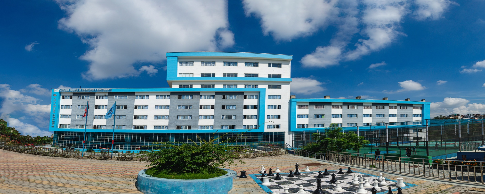

Education

Advanced College of Engineering and Management
Bachelor in Computer Engineering (2021–Present)
Relevant Coursework: Data Mining, Software Engineering, Data Structures & Algorithms, Artificial Intelligence

St. Xavier’s College
Plus Two (2019–2021)
Certifications
Python with Data Science (2024)
Figma Workshop (2023)
Beyond Academics
Outside of academics, I enjoy exploring music, gaming, sports and anime . These interests fuel my imagination and influence my approach to design and technology.